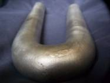
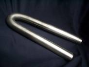
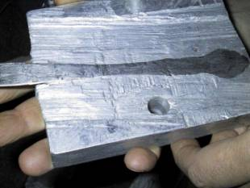
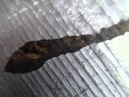

|
|
|
|
|
 |
|
|||
|
||||
|
|
||||
(This article has been "peer-reviewed")
|

|
 |
 |
|
Ace had not bothered to check the diameter of the rods which
John had bent � up to 3 inches in diameter. I had seen no evidence of �burn
marks�. Was John a blacksmith as well as a video faker? (That is, he would need
a hot kiln and metal shaping tools to do this.)
Though not video fakery per se, the metal sample with the
knife in it is equally silly. The knife is stainless steel. The metal looks
like a very soft aluminum. He poured some liquid aluminum around a knife. When
it cooled off, he took a grinder to it. Voila! Fused knife! Please.
|
 |
 |
How did John get liquid aluminium to work this way? We can
see on the right hand side the knife is quite well embedded into the metal
block, though over to the left it does not seem fully fused. The marks of the
surface of the block go in different directions, and certainly do not look like
the results from using a grinder.�� In
the picture on the right, why would molten aluminium would have left the wood
unburned?
A Lack of Scientific Curiosity?
On 29th February, a deadline for filing documents
in Judy�s Qui Tam case, Ace Baker sent another e-mail,
noting how he had advised Judy, Morgan Reynolds and myself of his claim to have
bought Tesla coils on e-bay in mid-January. He then said:
Dr.. Wood said nothing. Dr.. Reynolds said nothing. ... Mr. Leaphart said nothing.
I had produced evidence of anti-gravity levitation, one of
the most important and amazing aspects of the Hutchison Effect, and the silence
was deafening.
This, to me, seemed to make Ace�s motive clear. He seemed to
be saying �I made a fake video. You didn�t detect it was fake, therefore how
can your judgement be trusted?� Unlike Ace, I did not want to accuse him
outright of fakery, because I did not feel I had enough evidence to be certain
that he had made a fake video. I did not want to get into a debate about this
peculiar behaviour. He asked why we had not asked him questions about his
experiment and how peculiar he found it.
John had sent Ace (and others) a follow-up email, noting
that Ace's video was a joke.� John
pointed out that Ace would need a lot more equipment to produce the Hutchison
Effect.� (Note, John does not use Tesla
coils for levitation.)
My response at this time was to send
Ace an e-mail message with some of the most interesting questions regarding
the Hutchison Effect.
1)
How would you explain the up-turned cars at the WTC?
2)
How would you explain the beams bent into a loop at the WTC?
3)
How would you explain the ongoing effects on the Banker's
trust building?
Regarding John Hutchison, I asked Ace these questions:
1)
How do you explain the samples of metal that he has shown us?
2)
How do you explain the multiple witnesses to his experiments?
3)
Why did the Canadian Govt. class his experiments as a matter
of National Security? (see attached - as posted on his blog)
4)
Why did people like Hal Puthoff and Col John Alexander want to
contact him? (see attached- as posted on his blog)
5)
What do you think of Col John Alexander's statements that John
Hutchison is seeing the effects of "PK" (Psychokinesis)?
6)
Why would LANL express an interest in basic video fakery and
spend 4 months working with John?
Ace responded a short time later
saying:
> 1) How would you explain the up-turned cars at the WTC?
Good question. Certainly very powerful weapons of some type
were used to disintegrate the towers.
> 2) How would you explain the beams bent into a loop at
the WTC?
Good question. Ordinarily bending steel like that requires
foundry conditions.
So Ace did not have an alternative explanation for what
happened at the WTC, but he still thought it was a powerful weapon. Ace
rejected the idea that a letter from the Canadian Government to John said that
his work was a matter of National Security:
> 3) Why did
the Canadian Govt. class his experiments as a matter of National Security? (see
attached - as posted on his blog)
I read the letter. It does not classify "his
experiments as a matter of National Security". It is rejecting Hutchison's
request for information on the grounds of National Security. Please.
Ace�s response was, to me, a very unusual response � the
letter clearly linked John�s experiments with National Security issues, even if
the exact meaning is somewhat ambiguous. Ace�s next response was also very
surprising to me:
> 4) Why did
people like Hal Puthoff and Col John Alexander want to contact him? (see
attached- as posted on his blog)
Have Mr. Puthoff and/or Col. Alexander contact me, and I'll
explain to them how Huthison's videos are made.
This demonstrated an unusual lack of humility. Hal Puthoff
and Col John Alexander are well known in �alternative knowledge� circles.
Alexander is best known for his involvement in the Non Lethal
Weapons programme. Puthoff
is an experimental Physiscist and he has published many papers and a
textbook on �Quantum Electronics�. He has ties to the NSA, so like Alexander,
seems to be connected to the Military Industrial Complex.
So, Ace was suggesting that he�d be able to convince two
well known figures, both who have ties to the Military Industrial Complex and
have expressed interest, over several years, in John Hutchison�s work, that
John was a fraud? This claim of Ace�s was quite extraordinary to me.
Ace went on to suggest that the researchers from Los Alamos
never actually visited John � he seemed to be suggesting John had made the
whole thing up.
Ace further stated:
I'm 100% certain that Hutchison's videos were made exactly
as I describe.
So Ace was saying the Hutchison videos were fake, but still
didn�t explicitly disagree the Hutchison Effect evidence was similar to effects
seen at the WTC. Ace didn�t really fully address the fact that many videos of
John�s experiments were taken by other production companies, such as www.gryphonproductions.com and www.bluebookfilms.com.
I wanted to confirm some of the answers Ace had given so I sent him another message, asking him to confirm
that his views on these points:
1)
Everything JH says regarding his experiments is fake.
2)
Los Alamos have helped him promote fakery of one kind or
another.
3)
All the metal samples he has are fake or not what he says they
are.
4)
You have no idea what caused the documented effects at the
World Trade Centre.
Ace responded, saying he thought
all of John�s videos were fake (but I
asked about the actual experiments, not just the videos). Regarding the Los
Alamos National Labs (LANL) connection, Ace said:
Or, it could be that the government is seizing an
opportunity to promote false beliefs. They do that ALL THE TIME. If there is
any documentation about LANL and Hutchison, I'll review it.
Currently, I don�t have copies of substantial documentation,
but I have seen at least 2 documents showing the connection, and Col John
Alexander certainly doesn�t deny his connection to John Hutchison.
Ace also confirmed he does not know how the WTC was
destroyed.
Questions
The key questions in all of this seem to be:
1)
Why has Ace Baker taken it upon himself to try to disprove the
Hutchison Effect?� Why is this so
important?
2)
Why has he gone to such trouble to make several different
videos? (A new one appeared whilst this article was being written.)
3)
Was the timing of his attack on the Hutchison Effect
coincidental?
4)
Why did he accuse Drs. Wood, Reynolds and Jerry Leaphart of a
lack of Scientific Curiosity?
5)
Why does he regard 9/11 Research as �his turf�?
6)
Why does he seem reluctant to talk about the links between the
Hutchison Effect evidence and WTC Evidence?
7)
Why is his reaction so vehemently against the Hutchison Effect
(e.g. �John Hutchison is a fraud�) with no leeway for his own error. I.e. why
doesn�t he say �I am pretty sure it isn�t
related to the Hutchison Effect, but there could be something here.�
8)
Why is his research into the Hutchison Effect so different in
character to his other research such as the Chopper 5 video?
Conclusion
I would suggest the reason is that Ace Baker knows that the
Hutchison Effect is very relevant to what happened on 9/11 and he wants to
discourage people from thinking this. I would suggest he did this to try to
break up a small group of researchers. and to try to set them against one
another. (I suggested this idea to Ace in a follow up e-mail and he did not
respond to this point).
I would suggest Ace Baker knows more than he is letting on.
Who else knows?
EmailsE-Mail 1-----Original Message----- From: Ace Baker [mailto: This e-mail address is being protected from spam bots, you need JavaScript enabled to view it ] Sent: 18 January 2008 21:35 To: johnhutchison; Judy Wood Cc: Subject: Re: Attempt to produce Hutchison effect
Group,
Such exciting new developments!
As it turns out, I have experience with Tesla Coils. As a young teenager, I helped build a Tesla coil device. It was a Boy Scout project. We made a primary coil out of #6 gauge wire wrapped around a cylindrical arrangement of styrene plastic ribs. The secondary coil began as an 8 foot cardboard tube from the inside of a roll of carpet. We used a bicycle pedal to turn the tube as we wrapped the length of it with a fine, 24 gauge uninsulated copper wire.
We built a model city out of wood and cardboard. It had fluorescent bulbs, hooked up to nothing! When we turned the coil on, sure enough, the fluorescent bulbs lit up like Times Square. It was displayed at the "Scout-A-Rama". Some official deemed it "unsafe" and we weren't allowed to turn it on. We were all quite angry about that, we had been quite sure we'd win a ribbon.
My daughter and I are going to build two smaller coil assemblies this weekend, with variable voltage power supplies. Wish us luck!
E-Mail 2----- Original Message ----- From: "Ace Baker" ace@acebaker.com> To: xxxx Sent: Friday, January 18, 2008 11:20 PM Subject: Bought Tesla Coils on Ebay
> Got two different ones, they should both be here by Sunday, special > delivery. Can't wait. Don't have to build them. Love Ebay. ==============
E-Mail 3----- Original Message ----- From: ace baker To: Cc: Sent: Monday, January 21, 2008 7:41 AM Subject: Success! I have reproduced the Hutchison Effect!
Group,
This is very exciting. I have reproduced the Hutchison Anti-Gravity Effect. Please see this video.
http://www.youtube.com/watch?v=JKgHGOb4ClU
Please give me your comments.
Sincerely,
Ace Baker
E-Mail 4-----Original Message----- From: Andrew Johnson [mailto: This e-mail address is being protected from spam bots, you need JavaScript enabled to view it ] Sent: 21 January 2008 10:09 To: ace baker; Judy Wood Cc: Subject: Re: Success! I have reproduced the Hutchison Effect!
Ace,
This sounds very interesting indeed!
Would you be able to post a video to YouTube or somewhere? We might be able to use it!
Andrew
E-mail 5-----Original Message----- From: Ace Baker [mailto: This e-mail address is being protected from spam bots, you need JavaScript enabled to view it ] Sent: 27 February 2008 03:30 To: Cc: Subject: Re: You Tube H-Effect
Group,
Here's some of my original work that I'll be discussing with professor Fetzer. Enjoy, and comments welcome of course. Tesla's Dancing Screw
http://www.youtube.com/watch?v=-fHjnhS-T8U
Anti-gravity goop
http://www.youtube.com/watch?v=KywkBdLqaDU
Red Bull can experiment
E-mail 6-----Original Message----- From: Ace Baker [mailto: This e-mail address is being protected from spam bots, you need JavaScript enabled to view it ] Sent: Wednesday, February 27, 2008 9:01 PM To: Cc: Subject: Re: Status on Video
Group,
Well, we have a little issue with regard to the Hutchison Effect. Hutchison is a video faker, pure and simple. There is no Hutchison Effect. I'm sorry. Hutchison makes silly upside-down videos. If he video tapes one more thing falling up, I'll scream. He has a rotating miniature room like the old Fred Astaire movie. It's pretty cool, but it doesn't fool me. He wiggles things with a magnet on the back side, other times he has strings. He edits video, making things appear to change instantly.
He's been caught red-handed using strings on the toy UFO thing.
The boat is being moved by a person out of the picture, notice you can't see the back end of it. The vibrating water is - a vibrator touching the tub. The spontaneous fires are probably real fires, ignited flash powder. Notice that the fires appear and disappear instantly, and on the same frame the water instantly changes from vibrating to calm. They are edits. He reached in, lit the fires, got his hand out quickly. Then he edited out where his hands came in. OK?
Same deal with his pieces of metal that bend instantly. It's a freaking edit. Go watch "I Dream of Genie" reruns. Look, Genie pops in instantly! If Hutchison's metal really moved that fast, there would be motion blur. There isn't. At least he could learn some new software, and do some compositing like I have. He could add references to up and down, and to continuous time, as I have done. And a touch of motion blur as needed.
Though not video fakery per se, the metal sample with the knife in it is equally silly. The knife is stainless steel. The metal looks like a very soft aluminum. He poured some liquid aluminum around a knife. When it cooled off, he took a grinder to it. Voila! Fused knife! Please.
The bent rod is . . . a bent rod. He heated it up, bent it, and let it cool. Notice how it's charred in the middle, like where the bend is?
The little chips of metal are . . . little chips of metal. He attacked it with a grinder or whatever.
The Red Bull can I explained.
The one with the two levitating dishes is cute. They appear to float upwards a little bit, and rotate in the air, then fall down. Actually they are upside down, hanging from the ceiling by a string through the center. He lets the string down a little, then pulls it up quickly, slamming the dishes together against the ceiling. The whole thing is in slow motion.
Did I miss any? Don't think so. Here is John Hutchison himself, to me, in an email from just last night, regarding my H-Effect videos. And I quote:
"cool stuff makes it easy dont forget my ex had her own motion picture company in los angeles and showed me cool stuff on a grand scale look for fred astaire revolving room also the movei cleopatra was done images bolted onto the camera giveing the top section to the movei sets she blw up a mountain it looked like that but it was styrofoam with strings in a studio plus she showed me how cars ride on 2 sets of wheels and also the never ending story realy neet stuff are you working in the industry now ??? love to meet we are going ahead with the network tv show and you would be great to have around robert drake my producer wil be on with"
I was quite civil today on Dynamic Duo. The truth is John Hutchison is an unabashed fraud and charlatan. He is a disgrace. As long as he was just pushing UFO's, I didn't care. But when he stepped into 9/11, and video fakery, he stepped onto MY TURF. Under NO circumstances will I allow John Hutchison to pollute 9/11 research with his trickery.
It would be really, really a good idea to pull the plug on "Hutchison Effect", admit some errors, and get back to business.
Sincerely,
E-mail 7-----Original Message----- From: johnhutchison [mailto: This e-mail address is being protected from spam bots, you need JavaScript enabled to view it ] Sent: 28 February 2008 09:37 To: Cc: Subject: Re: Re:
in the old days such asinine statements where dealt with pistols in traditionl dueling ace buddy your challenged to this;;;; with witnesses as traditional ways with men not faggets or little men with little you know what ;;;real men with hearts who respect woman and children who have honor and dont wine and whimper to lawyers or cops like cowards,, its my way and was done before with fists and weapons iam not jokeing lucky no body got killed but a bloody mess i dont hide also in virtual worlds like a lot of psychological damaged folks do hideing and playing cyber games i normaly dont like confrontation but when its on me watch out i have had a number of human rights violations in this country;;; not the usa and fought back and won also ill be happy to leave this country ace you a bitch not only to me but to the gruop you either stand on your principals as you got folks counting on you !whatever they beleive is true in there realm of realities as each of us is differant iam myself open to sometimes the wildest things but i learn yet hold my opinions on this situation iam an observer the team has tp prove there ideas in the courts that should be easy in some cases as directed energy systems have been around a long time i so far have learned a lot i did not realize the buildings where bolted together one loose bolt on bad damaged bolt could have helped in this failure i dont see any beams where bolted together damaged on the holes hard for me to belive yet understand they where bolted together i lend support without crapping all over folks like you do ace the lace as well at the last minute you crap over everthing like a bloody idiot in a desperation to get out of this entire situation BITCH cheers john ps iam tibetian in thinking but realy folks there sometimes i love to give off a salvo its my other life as a sea captain ??????? now i sound nut but ;;;; it comes out in me its very strong but true
E-mail 8-----Original Message----- From: Ace Baker [mailto: This e-mail address is being protected from spam bots, you need JavaScript enabled to view it ] Sent: 29 February 2008 14:46 To: Cc: Subject: The Lack of Scientific Curiosity was Telling
Group,
In mid-January, I claimed to have bought two tesla coils on Ebay. A few days later, I sent around a video that showed a toy table moving around, then falling upwards. A cat strolled by in the background. My subject header was "Success! I have reproduced the Hutchison Effect".
I got a short note from John Hutchison accusing me of using "invisible wires" whatever those might be. Evidently he doesn't believe in his own effect. I got a short note from Andrew.
Dr.. Wood said nothing.
Dr.. Reynolds said nothing.
Mr. Gerst said nothing.
Mr. Leaphart said nothing.
I had produced evidence of anti-gravity levitation, one of the most important and amazing aspects of the Hutchison Effect, and the silence was deafening. Had the situation been reversed, and I believed in the Hutchison Effect, and I had written a paper claiming it was used to blow up the WTC, and I had received a brand new video from a known associate showing anti-gravity, I would have been overjoyed, and overcome with curiosity:
Wow! You made something fly upwards! What's the table made of? How did you do it? Where were the tesla coils positioned? How many windings on the coils? What gauge wire? What voltages? What frequencies? How far apart? Was there any sound? Could you repeat it? Could you feel it yourself? Were you harmed? Are you planning more experiments? Have you called the newspapers or the Nobel Prize Committee?
But no, there was none of that. Given the alleged belief, inexplicable.
Sincerely,
E-Mail 9-----Original Message----- From: Andrew Johnson [mailto: This e-mail address is being protected from spam bots, you need JavaScript enabled to view it ] Sent: 28 February 2008 15:04 To: Ace Baker Subject: Hutch Effect Program etc Ace,
I listened with interest to your broadcast re video fakery and the Hutchison effect. Russ kindly forward the message you sent regarding your view that John is basically a video faker.
I want to give people a balanced view, therefore I would like to post your comments and analysis on my mailing list and possibly on my website.
However, at this time, I have some additional questions of evidence that address some of the most compelling aspects of Judy's study.
These are as follows:
1) How would you explain the up-turned cars at the WTC? 2) How would you explain the beams bent into a loop at the WTC? 3) How would you explain the ongoing effects on the Banker's trust building?
Regarding John Hutchison:
1) How do you explain the samples of metal that he has shown us? 2) How do you explain the multiple witnesses to his experiments? 3) Why did the Canadian Govt. class his experiments as a matter of National Security? (see attached - as posted on his blog) 4) Why did people like Hal Puthoff and Col John Alexander want to contact him? (see attached- as posted on his blog) 5) What do you think of Col John Alexander's statements that John Hutchison is seeing the effects of "PK" (Psychokinesis)? 6) Why would LANL express an interest in basic video fakery and spend 4 months working with John?
Answers to these questions would make a great addition to my proposed posting. As a final, but least important question, was there any reason you didn't send your message to me but the others? (I don't regard myself as significant except because I shared the Ambrose Lane interviews with her to reveal this evidence to the world - essentially for the 1st time.)
I hope you are comfortable with the amount of evidence that you have to back up what you have said in e-mail.
Andrew
E-Mail 10-----Original Message----- From: Ace Baker [mailto: This e-mail address is being protected from spam bots, you need JavaScript enabled to view it ] Sent: 28 February 2008 18:41 To: This e-mail address is being protected from spam bots, you need JavaScript enabled to view it Subject: Re: Hutch Effect Program etc
Andrew,
Answers interspersed.
> 1) How would you explain the up-turned cars at the WTC?
Good question. Certainly very powerful weapons of some type were used to disintegrate the towers.
> 2) How would you explain the beams bent into a loop at the WTC?
Good question. Ordinarily bending steel like that requires foundry conditions.
> 3) How would you explain the ongoing effects on the Banker's trust > building?
Good question. And the fuming at ground zero generally. What was that about? It's certainly not fire, and it's not thermite, I'll promise you that. I think it's quite clear that some type of exotic weapon of mass destruction was used. It is capable of turning steel into white powder. It releases a lot of energy in the process. It can be detonated at precise times. It continues to react for a long time afterwards. Whether it's a chemical reaction, or nuclear, or something entirely new, I honestly can't say. Dr.. Wood has done a masterful job at making observations, presenting evidence, and asking the right kinds of questions. Unfortunately, she has teamed up with John Hutchison. I have no doubt that the evil geniuses at Los Alamos have cooked up all sorts of exotic secret weapons. But John Hutchison had nothing to do with it. There is no Hutchison Effect, I'm sorry. > > Regarding John Hutchison: > > 1) How do you explain the samples of metal that he has shown us?
Though not video fakery per se, the metal sample with the knife in it is equally silly. The knife is stainless steel. The metal looks like a very soft aluminum. He poured some liquid aluminum around a knife. When it cooled off, he took a grinder to it. Voila! Fused knife! Please.
The bent rod is . . . a bent rod. He heated it up, bent it, and let it cool. Notice how it's charred in the middle, like where the bend is?
The little chips of metal are . . . little chips of metal. He attacked it with a grinder or whatever.
If there are other samples I've missed, let me know. > 2) How do you explain the multiple witnesses to his experiments?
I explain Hutchison's witnesses the same way I explain multiple witnesses to planes at the WTC: They are lying or they are mistaken. It's my understanding that Hutchison has never been able to produce his effects under scrutiny. I'd be more than happy to witness one of his experiments.
> 3) Why did the Canadian Govt. class his experiments as a matter of > National Security? (see attached - as posted on his blog)
I read the letter. It does not classify "his experiments as a matter of National Security". It is rejecting Hutchison's request for information on the grounds of National Security. Please.
> 4) Why did people like Hal Puthoff and Col John Alexander want to > contact him? (see attached- as posted on his blog)
Have Mr. Puthoff and/or Col. Alexander contact me, and I'll explain to them how Huthison's videos are made.
> 5) What do you think of Col John Alexander's statements that John > Hutchison is seeing the effects of "PK" (Psychokinesis)?
Either Col. Alexander is lying, or he was fooled by Hutchison's fake videos.
> 6) Why would LANL express an interest in basic video fakery and > spend 4 months working with John?
Los Alamos have a strong interest in promoting false beliefs. In case you haven't noticed, the government promotes all sorts of false things. The idea is to create so many versions of reality that people don't know what to believe.
Or, it never even happened. Is there a paper I can read from LANL describing their findings with Hutchison? Or at least some confirmation that this 4 month experiment took place? Not that I would believe Los Alamos if they denied it, but I'm certainly not going to believe John Hutchison, given his fake videos.
> > Answers to these questions would make a great addition to my > proposed posting. As a final, but least important question, was > there any reason you didn't send your message to me but the others? > (I don't regard myself as significant except because I shared the > Ambrose Lane interviews with her to reveal this evidence to the > world - essentially for the 1st time.)
You weren't included in that particular email message because I was replying to a message originally sent to me. > > I hope you are comfortable with the amount of evidence that you > have to back up what you have said in e-mail.
I'm 100% certain that Hutchison's videos were made exactly as I describe. I've repeated his results, and published. If Hutchison wants to invite me to his place to witness an experiment, I will pay my own way to get there. I've offered him a $5000 reward if he can reproduce the H-Effect for my camera. Hutchison is threatening me with violence.
-Ace Baker > E-mail 11
-----Original Message----- From: Andrew Johnson [mailto: This e-mail address is being protected from spam bots, you need JavaScript enabled to view it ] Sent: 28 February 2008 19:30 To: Ace Baker Subject: RE: Hutch Effect Program etc
Ace,
Thanks for your answers - I think you have given me the information I needed.
Your answers do not address all of the evidence. As John pointed out to you, many of the videos weren't even made by him. I never mentioned a knife in what I wrote - maybe I should've made it clear I was referring to Aluminium bars and steel etc - the bigger stuff.
What you are basically saying that, correct me if I am wrong:
1) Everything JH says regarding his experiments is fake. 2) Los Alamos have helped him promote fakery of one kind or another. 3) All the metal samples he has are fake or not what he says they are. 4) You have no idea what caused the documented effects at the World Trade Centre. 5) Even though I have been helping Judy with the Hutch stuff and candidly spoken about it in public and on air etc, this didn't warrant including me in the discussion.
As a kind of related extra point:
6) Wikipedia is unreliable for 9/11 stuff, but reliable when it comes to John Hutchison and his experiments.
Is this a fair summary of what you are saying? can you give me "yes" or "no" or short refinements to the above summary, so I can get this straight as to what you are actually saying?
If you are I'm "100% certain that Hutchison's videos were made exactly as I describe" would you be willing to contact the TV companies that have filmed his experiments and verify that ALL their videos are fakes too?
As for the other information you asked for, it's easy enough to find, so I'll leave you to investigate for yourself. We haven't claimed there are peer reviewed papers about Hutch - basically because there aren't any in the public domain that I know of, but there are people George Hathaway, Boyd Bushman and others who have written reports about the experiments - which was mentioned in our press release. I've known of John Hutchison since either 1997 or 1999 and it's been a real pleasure to speak with him.
I look forward to getting clarification and, if possible, answers or a response to the other comments I made to the group message.
Andrew
E-mail 12
-----Original Message----- From: Ace Baker [mailto: This e-mail address is being protected from spam bots, you need JavaScript enabled to view it ] Sent: 28 February 2008 21:20 To: This e-mail address is being protected from spam bots, you need JavaScript enabled to view it Subject: Re: Hutch Effect Program etc
Andrew,
I'm correcting you.
1. All of John Hutchison's videos are video trickery, yes. Correct. If there are any specific shots that I have not explained, link me to them and I will be glad to explain them.
2. I don't have any idea what Los Alamos National Lab relationship is with Hutchison, if any. It could be that there was never any relationship at all. Or, it could be that the government is seizing an opportunity to promote false beliefs. They do that ALL THE TIME. If there is any documentation about LANL and Hutchison, I'll review it.
3. The metal samples are not "fake", they're real. I haven't seen anything that looked particularly unusual. If there are particular things that you think require explanation, please link me, and describe what you think is unusual about them.
4. Correct. I don't know how they blew up the WTC.
5. Andrew, I'm not excluding you from any conversation. I told you. The original email to which you refer was a REPLY. Someone sent me a mail, and I answered it. I hit "REPLY TO ALL". You were not on that original email.
E-mail 13-----Original Message----- From: Andrew Johnson [mailto: This e-mail address is being protected from spam bots, you need JavaScript enabled to view it ] Sent: 28 February 2008 22:50 To: Ace Baker Subject: RE: Hutch Effect Program etc
Thanks for those corrections and clarifications. I appreciate you taking the time to send me the information.
I wasn't all that bothered about 5 - just curious because when I wrote the press release re Hutch Effect etc, and I was the named author, Jim contacted Judy about it without contacting me at the same time when he offered to "smooth out wrinkles" in it. It's just an apparent pattern I have observed - probably nothing...
Andrew
E-mail 14-----Original Message----- From: Judy Wood [mailto: This e-mail address is being protected from spam bots, you need JavaScript enabled to view it ] Sent: 27 February 2008 00:35 To: johnhutchison; This e-mail address is being protected from spam bots, you need JavaScript enabled to view it ; This e-mail address is being protected from spam bots, you need JavaScript enabled to view it Cc: Morgan Reynolds; Ace Baker; Jerry Leaphart; Andrew Johnson; Russ Gerst; Steve Goodale Subject: Re: Will be on Dynamic Duo Tomorrow
It's Thursday. This is the first I've learned that Fetzer is having Ace on to talk about the Hutchison Effect. That's pretty weird.
I don't know what Fetzer is doing. Why would he have Ace introduce someone else's work? Why?
E-mail 15-----Original Message----- From: This e-mail address is being protected from spam bots, you need JavaScript enabled to view it [mailto: This e-mail address is being protected from spam bots, you need JavaScript enabled to view it ] Sent: 27 February 2008 03:59 To: Judy Wood; This e-mail address is being protected from spam bots, you need JavaScript enabled to view it Cc: johnhutchison; This e-mail address is being protected from spam bots, you need JavaScript enabled to view it ; Morgan Reynolds; Ace Baker; Jerry Leaphart; Andrew Johnson; Russ Gerst; Steve Goodale Subject: Re: Will be on Dynamic Duo Tomorrow
Judy,
I don't know where this is coming from. Ace will be discussing the latest on video fakery/planes/no planes, not the Hutchison Effect. I am having you and John on Thursday for that purpose. Many thanks!
Jim E-mail 16-----Original Message----- From: Judy Wood [mailto: This e-mail address is being protected from spam bots, you need JavaScript enabled to view it ] Sent: 27 February 2008 05:57 To: This e-mail address is being protected from spam bots, you need JavaScript enabled to view it Cc: This e-mail address is being protected from spam bots, you need JavaScript enabled to view it Subject: Re: Will be on Dynamic Duo Tomorrow
Jim, Ace sent out an email to the rest of the folks on the list I added you to.
"Hi All, I'll be on Dynamic Duo with Jim Fetzer tomorrow 5-7 EST. I'll be discussing latest research including H Effect. Should be memorable."
It just seemed a bit weird to have Ace on, talking about this same topic, while his area of expertise is video fakery. I've heard a lot of good things about his presentations on this topic. He gets folks interested in thinking about things and that's really cool!
As a listener, I like to learn new things from those who know about things I don't know about. Also, as a listener, I prefer to learn new and interesting things that motivate me to think about new things or old things in a new way. "Debates" don't seem very useful; they consume a lot of energy and don't inspire the listener to learn and think.
Tomorrow will not work for me. Let's keep it for Thursday, as planned.
Thanks! E-mail 17
Envelope-to: This e-mail address is being protected from spam bots, you need JavaScript enabled to view it Date: Wed, 27 Feb 2008 05:46:43 -0600 From: This e-mail address is being protected from spam bots, you need JavaScript enabled to view it To: Judy Wood < This e-mail address is being protected from spam bots, you need JavaScript enabled to view it Cc: This e-mail address is being protected from spam bots, you need JavaScript enabled to view it Subject: Re: Will be on Dynamic Duo Tomorrow
Yes, but I hadn't noticed the "H-effect" remark when I scanned it. I had not imposed any limits on his scope of discussion in having him back. You and John were on with Morgan recently, as I recall, so this isn't really the first introduction of his work in relation to yours. I will have Ace on on Wednesday and you and John on Thursday, but I am interested in what Ace may have come up with. I am fascinated to learn more about all this! Quoting Judy Wood < This e-mail address is being protected from spam bots, you need JavaScript enabled to view it :
E-Mail 18== Envelope-to: This e-mail address is being protected from spam bots, you need JavaScript enabled to view it Date: Tue, 26 Feb 2008 22:37:01 -0600 From: This e-mail address is being protected from spam bots, you need JavaScript enabled to view it To: This e-mail address is being protected from spam bots, you need JavaScript enabled to view it , This e-mail address is being protected from spam bots, you need JavaScript enabled to view it Cc: Subject: Re: Will be on Dynamic Duo Tomorrow X-Virus-Scanned: ClamAV 0.92.1/6006/Tue Feb 26 19:03:40 2008 on mxv2.d.umn.edu X-Virus-Status: Clean
Judy,
I certainly had not imposed any restrictions on what Ace would cover, but if there is a conflict, we could switch your appearances and have him on Thursday while you and John are on Wednesday. I am asking him if that would work for him, since I infer it would work for you. I'll email you after I speak with him, but it won't be till tomorrow morning.
Jim |
|
|
|
|
|
|
|